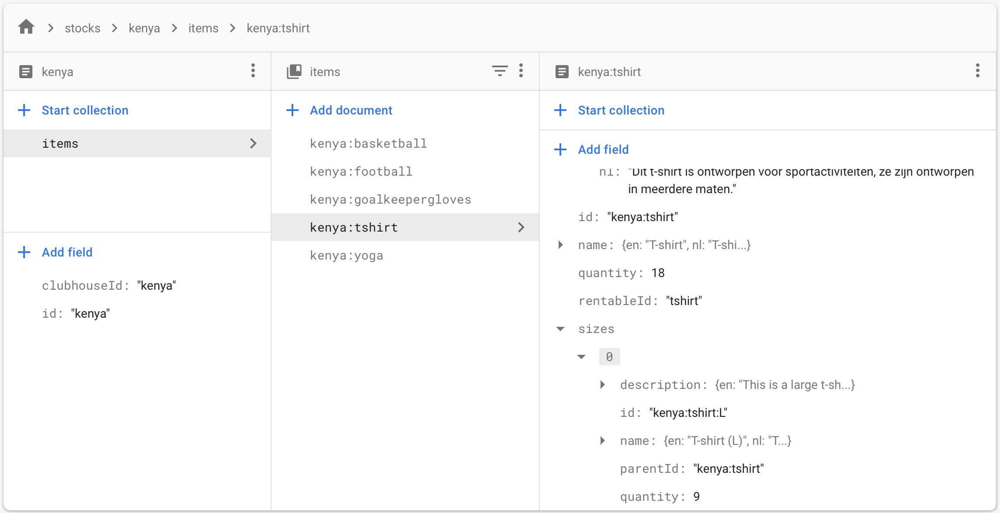
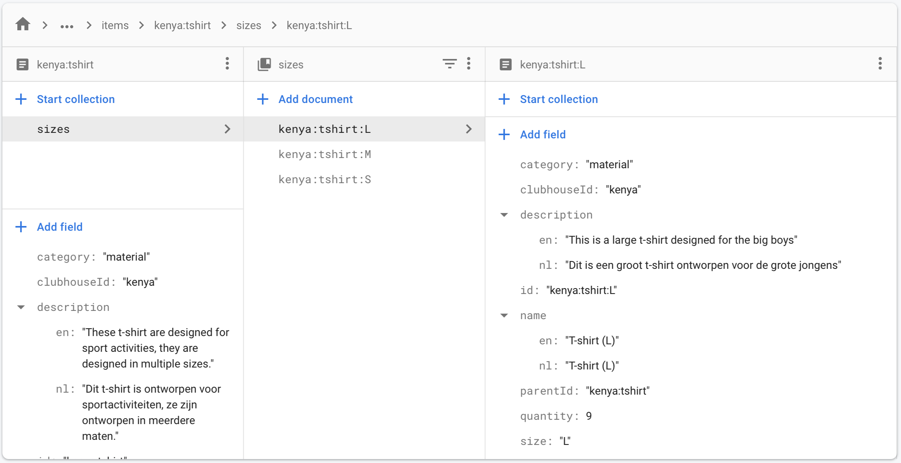
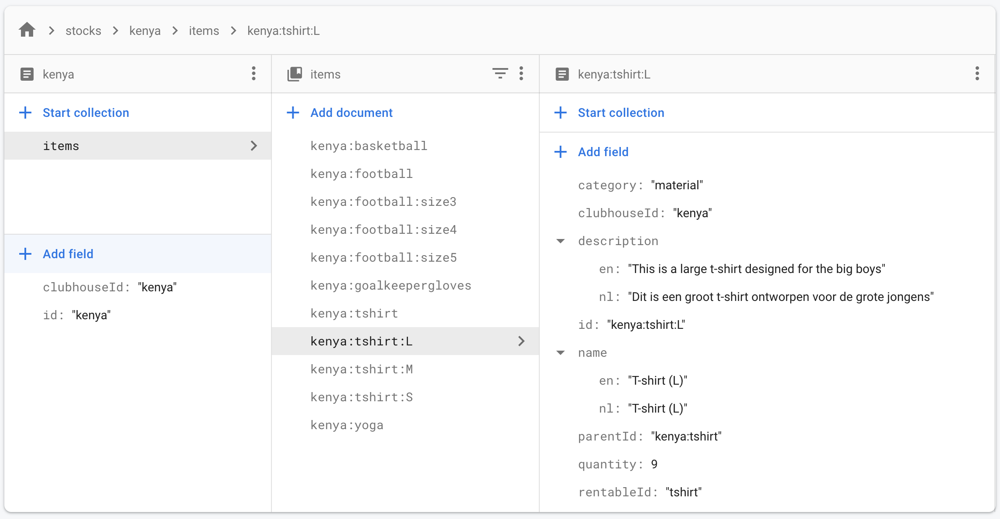

Prototype booking & return flow
Nu er een database model is ontworpen zal er onderzocht worden aan de hand van een prototype of dit database model ook effectief met de use cases van het systeem om kan gaan. Op basis van de resultaten van het prototype kunnen er indien nodig aanpassingen gemaakt worden aan het database model.
Uit welke structuur moet het database model bestaan om met de data van de verschillende use cases van de mobile app om te gaan?
Door middel van de onderzoeksstrategie workshop met behulp van de onderzoeksmethode prototyping, ga ik op basis van het database model van voorgaande onderzoek een prototype bouwen waarmee ik wil toetsen of het database model effectief is met het omgaan van de use cases van het systeem. Hierbij werk ik de booking en return flows uit waarmee de gebruiker items kan uitlenen aan een member en terug brengen wanneer deze member klaar is met het uitlenen van de spullen. Wanneer hier bevindingen uitkomen waaruit blijkt dat het database model aangepast moet worden, zal dit gedaan worden en in de conclusie worden verwerkt.
Hieronder zijn de booking flow (links) en return flow (rechts) te zien, hierin worden 3 t-shirts en 2 basketballen uitgeleend aan een member genaamd John Doe. Deze booking wordt vervolgens toegevoegd aan rentings en is dan ook in de return flow terug te vinden.


In de eerste versie van het database model werden sizes van items binnen een array in het document van het item opgeslagen (zie afbeelding hieronder). Voor het laten zien en selecteren van de sizes werkte dit prima, maar bij het maken van de booking order moet deze hoeveelheid van de quantity van de item size afgeteld worden. Firebase support het niet om arrays binnen een document aan te passen vanuit een request.
De logische oplossing hierop was het aanmaken van een collectie voor elk document dat sizes heeft (zie afbeelding hieronder). Dit werkte inderdaad als een goede oplossing, zowel het laten zien en selecteren van de item sizes als het maken van een booking order werkte met deze structuur goed. Het probleem met deze data structuur was het feit dat zowel de web variant als de app later in de realisatie fase met big data moet werken om de verschillende data grafieken te genereren. Hiervoor zal er gebruik gemaakt worden van big query en daarvoor was het noodzakelijk dat de items collectie een platte data structuur heeft en dus geen subcollecties.
Als oplossing hiervoor is er gekozen voor het apart opslaan van item sizes waarin elke item size zijn eigen document heeft (zie afbeelding hieronder). Op deze manier werkt de functionaliteit van de app en kan er in de realisatie fase van de app gebruik gemaakt worden van big query voor het genereren van complexe data queries.
Uit het prototype is gebleken dat het inventarisatie en uitlening systeem effectief werkt met het ontworpen database model. Er bleken nog wat aanpassingen nodig te zijn voor de data structuur van het opslaan van item sizes, maar na verschillende oplossingen is de juiste structuur gevonden en deze is ook gelijk aangepast in het database model. Het database model zal actief bijgehouden worden voor als er in de realisatie fase bevindingen onstaan waaruit blijkt dat er aanpassingen nodig zijn voor het ontworpen database model. Voor nu kan er geconcludeerd worden dat wanneer de realisatie fase van start gaat, er op het ontworpen database model gesteund en gebouwd kan worden.